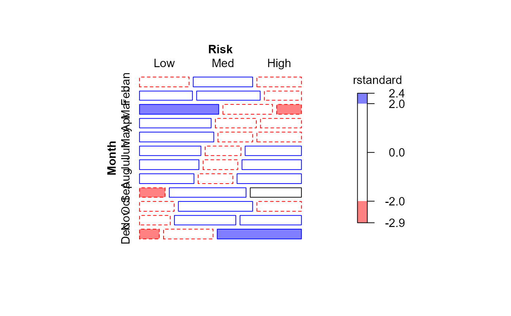
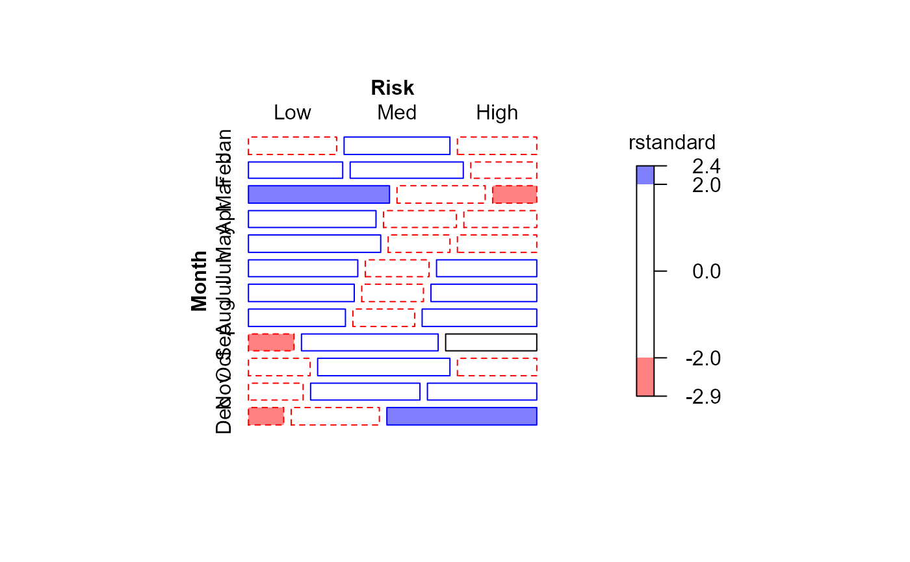

This data set gives the results of the 1970 US draft lottery, in the form of a frequency table. The rows are months of the year, Jan–Dec and columns give the number of days in that month which fall into each of three draft risk categories High, Medium, and Low, corresponding to the chances of being called to serve in the US army.
Format
The format is:
'table' int [1:12, 1:3] 9 7 5 8 9 11 12 13 10 9 ...
- attr(*, "dimnames")=List of 2
..$ Month: chr [1:12] "Jan" "Feb" "Mar" "Apr" ...
..$ Risk : chr [1:3] "High" "Med" "Low"
Source
This data is available in several forms, but the table version was obtained from
https://sas.uwaterloo.ca/~rwoldfor/software/eikosograms/data/draft-70
Details
The lottery numbers are divided into three categories of risk of being called for the draft – High, Medium, and Low – each representing roughly one third of the days in a year. Those birthdays having the highest risk have lottery numbers 1-122, medium risk have numbers 123-244, and the lowest risk category contains lottery numbers 245-366.
References
Fienberg, S. E. (1971), "Randomization and Social Affairs: The 1970 Draft Lottery," Science, 171, 255-261.
Starr, N. (1997). Nonrandom Risk: The 1970 Draft Lottery, Journal of Statistics Education, v.5, n.2 https://jse.amstat.org/v5n2/datasets.starr.html
Examples
data(Draft1970table)
chisq.test(Draft1970table)
#>
#> Pearson's Chi-squared test
#>
#> data: Draft1970table
#> X-squared = 37.156, df = 22, p-value = 0.02274
#>
# plot.table -> graphics:::mosaicplot
plot(Draft1970table, shade=TRUE)
 mosaic(Draft1970table, gp=shading_Friendly)
mosaic(Draft1970table, gp=shading_Friendly)
 # correspondence analysis
if(require(ca)) {
ca(Draft1970table)
plot(ca(Draft1970table))
}
# correspondence analysis
if(require(ca)) {
ca(Draft1970table)
plot(ca(Draft1970table))
}
 # convert to a frequency data frame with ordered factors
Draft1970df <- as.data.frame(Draft1970table)
Draft1970df <- within(Draft1970df, {
Month <- ordered(Month)
Risk <- ordered(Risk, levels=rev(levels(Risk)))
})
str(Draft1970df)
#> 'data.frame': 36 obs. of 3 variables:
#> $ Month: Ord.factor w/ 12 levels "Jan"<"Feb"<"Mar"<..: 1 2 3 4 5 6 7 8 9 10 ...
#> $ Risk : Ord.factor w/ 3 levels "Low"<"Med"<"High": 3 3 3 3 3 3 3 3 3 3 ...
#> $ Freq : int 9 7 5 8 9 11 12 13 10 9 ...
# similar model, as a Poisson GLM
indep <- glm(Freq ~ Month + Risk, family = poisson, data = Draft1970df)
mosaic(indep, residuals_type="rstandard", gp=shading_Friendly)
#> Warning: no formula provided, assuming ~Month + Risk

# numeric scores for tests of ordinal factors
Cscore <- as.numeric(Draft1970df$Risk)
Rscore <- as.numeric(Draft1970df$Month)
# linear x linear association between Month and Risk
linlin <- glm(Freq ~ Month + Risk + Rscore:Cscore, family = poisson, data = Draft1970df)
# compare models
anova(indep, linlin, test="Chisq")
#> Analysis of Deviance Table
#>
#> Model 1: Freq ~ Month + Risk
#> Model 2: Freq ~ Month + Risk + Rscore:Cscore
#> Resid. Df Resid. Dev Df Deviance Pr(>Chi)
#> 1 22 38.261
#> 2 21 23.885 1 14.376 0.0001497 ***
#> ---
#> Signif. codes: 0 ‘***’ 0.001 ‘**’ 0.01 ‘*’ 0.05 ‘.’ 0.1 ‘ ’ 1
mosaic(linlin, residuals_type="rstandard", gp=shading_Friendly)
#> Warning: no formula provided, assuming ~Month + Risk
# convert to a frequency data frame with ordered factors
Draft1970df <- as.data.frame(Draft1970table)
Draft1970df <- within(Draft1970df, {
Month <- ordered(Month)
Risk <- ordered(Risk, levels=rev(levels(Risk)))
})
str(Draft1970df)
#> 'data.frame': 36 obs. of 3 variables:
#> $ Month: Ord.factor w/ 12 levels "Jan"<"Feb"<"Mar"<..: 1 2 3 4 5 6 7 8 9 10 ...
#> $ Risk : Ord.factor w/ 3 levels "Low"<"Med"<"High": 3 3 3 3 3 3 3 3 3 3 ...
#> $ Freq : int 9 7 5 8 9 11 12 13 10 9 ...
# similar model, as a Poisson GLM
indep <- glm(Freq ~ Month + Risk, family = poisson, data = Draft1970df)
mosaic(indep, residuals_type="rstandard", gp=shading_Friendly)
#> Warning: no formula provided, assuming ~Month + Risk

# numeric scores for tests of ordinal factors
Cscore <- as.numeric(Draft1970df$Risk)
Rscore <- as.numeric(Draft1970df$Month)
# linear x linear association between Month and Risk
linlin <- glm(Freq ~ Month + Risk + Rscore:Cscore, family = poisson, data = Draft1970df)
# compare models
anova(indep, linlin, test="Chisq")
#> Analysis of Deviance Table
#>
#> Model 1: Freq ~ Month + Risk
#> Model 2: Freq ~ Month + Risk + Rscore:Cscore
#> Resid. Df Resid. Dev Df Deviance Pr(>Chi)
#> 1 22 38.261
#> 2 21 23.885 1 14.376 0.0001497 ***
#> ---
#> Signif. codes: 0 ‘***’ 0.001 ‘**’ 0.01 ‘*’ 0.05 ‘.’ 0.1 ‘ ’ 1
mosaic(linlin, residuals_type="rstandard", gp=shading_Friendly)
#> Warning: no formula provided, assuming ~Month + Risk